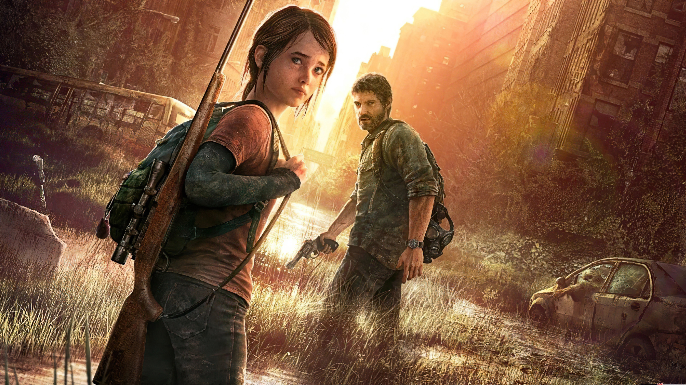

The Last of Us
Jogo de ação-aventura e sobrevivência · 2013

Por que eu gosto
A histório do jogo no mundo pós-apocaliptico é muito interessante e te prende do inicio ao fim. A relação que o Joel e a Ellie desenvolve também é linda e emocionante.
Ficha técnica
| Gênero | ação-aventura, sobrevivência |
|---|---|
| Lançamento | Junho/2013 |
| Plataforma | Exclusivo para Playstation e PC |